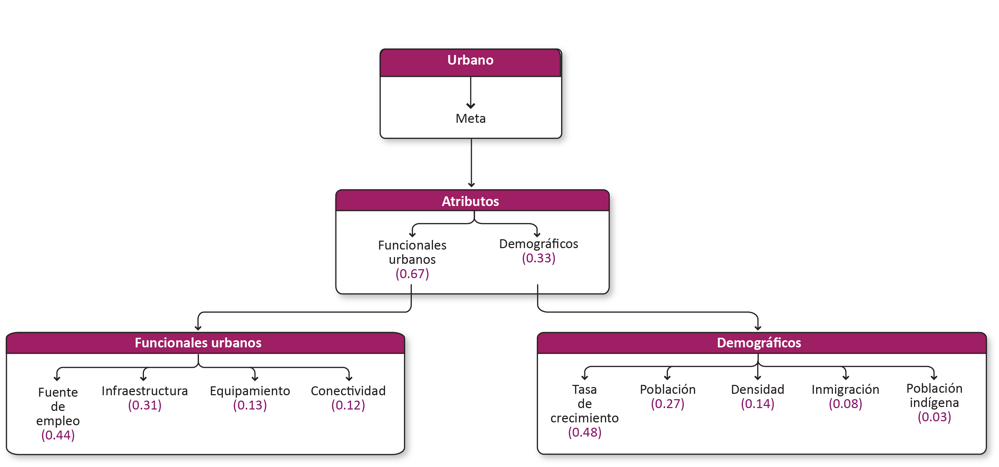

Urbano¶
Meta¶
Contener la expansión urbana y aprovechar las zonas con infraestructura en Mérida(?). Fomentar la descentralización en Yucatán. Generar las condiciones en todas sus vertientes para el desarrollo urbano en todo el estado.
Modelo AHP del sector urbano

Criterios¶
Atributos funcionales urbanos¶
| Criterio | Definición |
|---|---|
| Fuente de empleo | Distancia a las fuentes de empleo. |
| Infraestructura | Cobertura de las redes de agua potable y energía eléctrica. |
| Equipamiento | Elementos que pueden dar servicios a la población (centros de salud, escuelas, administrativo gubernamental). |
| Conectividad | Vinculación de asentamientos a través de la infraestructura vial. |
Fuente de empleo¶
Distancia a las fuentes de empleo.
Insumos
| Capa | Unidades económicas totales |
|---|---|
| Fuente | [1] Conjunto de datos vectoriales de información topográfica por Entidad Federativa Serie VI (localidad250_a) INEGI y [2] Directorio Estadístico Nacional de Unidades Económicas (DENUE) INEGI |
| Año | [1]2019; [2] 2020 |
| Escala | Localidad |
| Unidades | Número |
| Capa | Población ocupada |
|---|---|
| Fuente | [1] Conjunto de datos vectoriales de información topográfica por Entidad Federativa Serie VI (localidad250_a) INEGI y [2] Censo de Población y Vivienda. Principales resultados por localidad (ITER) INEGI |
| Año | [1] 2019; [2] 2010 |
| Campo | [2] POBTOT y POCUPADA |
| Escala | Localidad |
| Unidades | Porcentaje |
Infraestructura¶
Cobertura de las redes de agua potable y energía eléctrica.
Insumos
| Capa | Viviendas totales con agua entubada, drenaje y energía eléctrica |
|---|---|
| Fuente | [1] Conjunto de datos vectoriales de información topográfica por Entidad Federativa Serie VI (localidad250_a) INEGI y [2] Censo de Población y Vivienda. Principales resultados por localidad (ITER) INEGI |
| Año | [1] 2019; [2] 2010 |
| Campo | [2] VIVTOT y VPH_C_SERV |
| Escala | Localidad |
| Unidades | Porcentaje |
Equipamiento¶
Elementos que pueden dar servicios a la población (centros de salud, escuelas, administrativo gubernamental).
Insumos
| Capa | Población derechohabiente a servicios de salud |
|---|---|
| Fuente | Censo de Población y Vivienda. Principales resultados por localidad (ITER) INEGI |
| Año | 2010 |
| Campo | [1] POBTOT; [2] PDER_SS |
| Escala | Localidad |
| Unidades | Porcentaje |
| Capa | Número de unidades económicas de escuelas totales |
|---|---|
| Fuente | Directorio Estadístico Nacional de Unidades Económicas (DENUE) INEGI |
| Año | 2020 |
| Escala | Localidad |
| Unidades | Porcentaje |
| Capa | Unidades económicas de centros de salud |
|---|---|
| Fuente | [1] Conjunto de datos vectoriales de información topográfica por Entidad Federativa Serie VI (localidad250_a) INEGI y [2] Directorio Estadístico Nacional de Unidades Económicas (DENUE) INEGI |
| Año | [1]2019; [2] 2020 |
| Escala | Localidad |
| Unidades | Número |
Conectividad¶
Vinculación de asentamientos a través de la infraestructura vial.
Insumos
| Capa | Inverso del índice de dispersión poblacional municipal trasladado a localidades |
|---|---|
| Fuente | [1] Conjunto de datos vectoriales de información topográfica por Entidad Federativa Serie VI (localidad250_a y carretera_l) INEGI y [2] Censo de Población y Vivienda. Principales resultados por localidad (ITER) INEGI |
| Año | [1] 2019; [2] 2010 |
| Campo | [2] POBTOT |
| Adimensional | Porcentaje |
Demográficos¶
| Criterio | Definición |
|---|---|
| Tasa crecimiento | Tasa de crecimiento poblacional 10 años (2010-2020). |
| Población | Número de habitantes. |
| Densidad | Número de habitantes por hectárea. |
| Inmigración | Porcentaje de la población total nacida fuera de la entidad o país. |
| Población indígena | Porcentaje de la población índígena en el asentamiento. |
Tasa de crecimiento¶
Tasa de crecimiento poblacional 10 años (2000-2010).
Insumos
| Capa | Tasa de crecimiento |
|---|---|
| Fuente | [1] Conjunto de datos vectoriales de información topográfica por Entidad Federativa Serie VI (localidad250_a) INEGI y [2] Censos de Población y Vivienda. Principales resultados por localidad (ITER) INEGI |
| Año | [1] 2019; [2] 2000 y 2010 |
| Campo | [2] POBTOT |
| Escala | Localidad |
| Unidades | Porcentaje |
Población¶
Número de habitantes.
Insumos
| Capa | Tamaño poblacional |
|---|---|
| Fuente | [1] Conjunto de datos vectoriales de información topográfica por Entidad Federativa Serie VI (localidad250_a) INEGI y [2] Censo de Población y Vivienda. Principales resultados por localidad (ITER) INEGI |
| Año | [1] 2019; [2] 2010 |
| Campo | [2] POBTOT |
| Escala | Localidad |
| Unidades | Número de habitantes |
Densidad¶
Número de habitantes por hectárea.
Insumos
| Capa | Densidad de población |
|---|---|
| Fuente | [1] Conjunto de datos vectoriales de información topográfica por Entidad Federativa Serie VI (localidad250_a) INEGI y [2] Censo de Población y Vivienda. Principales resultados por localidad (ITER) INEGI |
| Año | [1] 2019; [2] 2010 |
| Campo | [2] POBTOT |
| Escala | Localidad |
| Unidades | Número de habitantes/hectárea |
Inmigración¶
Porcentaje de la población total nacida fuera de la entidad o país.
Insumos
| Capa | Inmigración |
|---|---|
| Fuente | [1] Conjunto de datos vectoriales de información topográfica por Entidad Federativa Serie VI (localidad250_a) INEGI y [2] Censo de Población y Vivienda. Principales resultados por localidad (ITER) INEGI |
| Año | [1] 2019; [2] 2010 |
| Campo | [2] POBTOT y PNACOE |
| Escala | Localidad |
| Unidades | Porcentaje |
Población indígena¶
Porcentaje de la población índígena en el asentamiento.
Insumos
| Capa | Población indígena |
|---|---|
| Fuente | [1] Conjunto de datos vectoriales de información topográfica por Entidad Federativa Serie VI (localidad250_a) INEGI y [2] Censo de Población y Vivienda. Principales resultados por localidad (ITER) INEGI |
| Año | [1] 2019; [2] 2010 |
| Campo | [2] POBTOT y P3YM_HLI |
| Escala | Localidad |
| Unidades | Porcentaje |